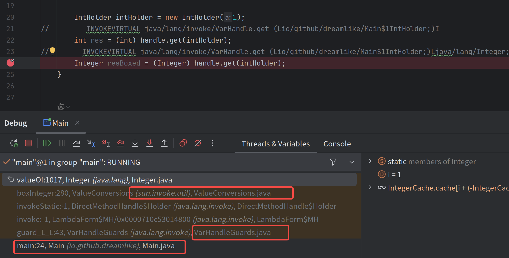
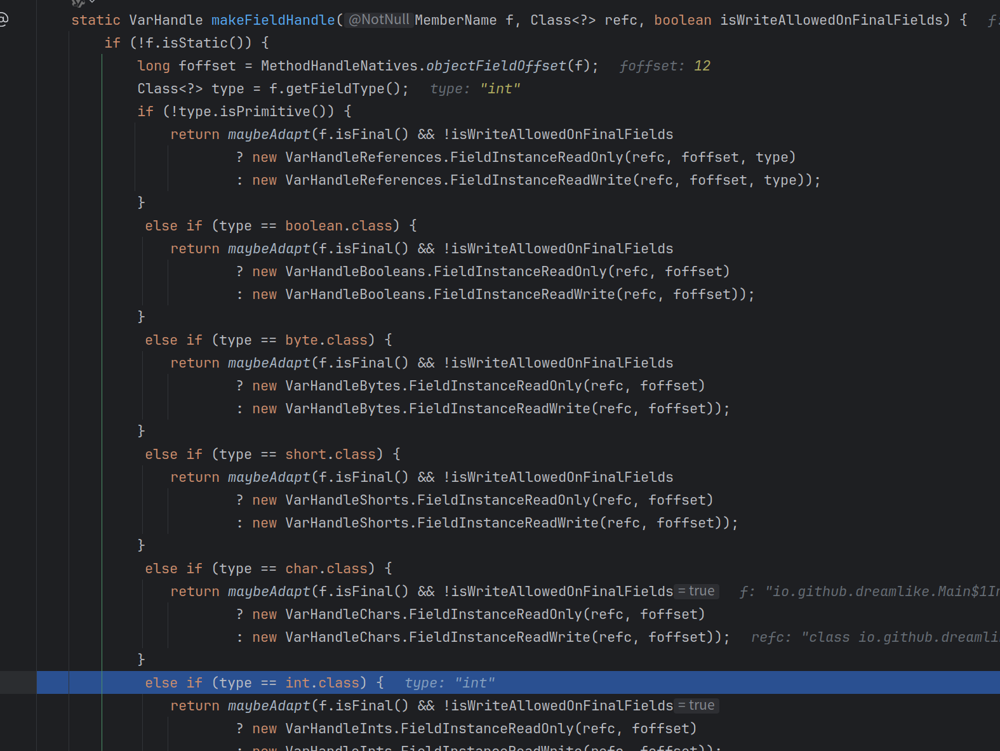
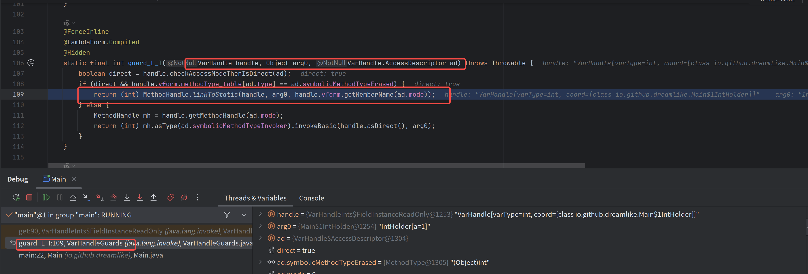

Panama教程-0-Varhandle介绍
前言
在介绍Panama用法之前，需要引入一个关于Varhandle的介绍，Panama中对于结构体的操作会大量用到这个类
Varhandle的API看起来像是Reflection API中的Field,但是实际上它与MethodHandle一样是一个更底层的API,从它的实现来看它更贴近于VM的内存操作，从使用来看它是Unsafe类中的内存操作的安全封装
使用简介
使用
与Methodhandle一样，Varhandle也是先从Lookup中获取的，从Lookup也看得出来，它跟Methohandle的权限控制也是一致的——只校验Lookup在find*的时候是否具有对应的权限，而在调用时则不校验权限。
private static final String a = "!@3";
private int b;
public static void main(String[] args) throws NoSuchFieldException, IllegalAccessException {
MethodHandles.Lookup lookup = MethodHandles.lookup();
VarHandle staticVarHandle = lookup.findStaticVarHandle(Main.class, "a", String.class);
VarHandle varHandle = lookup.findVarHandle(Main.class, "b", int.class);
}
好我们再来看下具体的使用方式
这就是最简单的一种使用方式——这种方式等价于我们直接在代码里面使用a.c的形式
public static void main(String[] args) throws NoSuchFieldException, IllegalAccessException {
MethodHandles.Lookup lookup = MethodHandles.lookup();
VarHandle staticVarHandle = lookup.findStaticVarHandle(Main.class, "a", String.class);
String s = (String) staticVarHandle.get();
//静态varHandle 不需要传入实例对象
assertEquals(s, Main.a);
VarHandle varHandle = lookup.findVarHandle(Main.class, "b", int.class);
Main main = new Main();
main.b = 10;
//实例varHandle第一个参数是实例对象
assertEquals(10, (int) varHandle.get(main));
}
Varhandle的能力不致于此，它提供了一整套原来只有Unsafe才能提供的内存语义(memory semantics)
例如 VarHandle::setVolatile，它提供了volatile的写操作，而你并不需要声明对应的变量为volatile，还有更多的可以参考文档以及本blog的这篇介绍内存顺序的文章
所以你甚至可以这样优化下DCL的代码
public static class TryDCLStableValue<T> implements StableValue<T> {
private static final VarHandle HANDLE;
public final Supplier<T> factory;
private T cache;
public TryDCLStableValue(Supplier<T> factory) {
this.factory = factory;
}
@Override
public T get() {
T res = (T) HANDLE.get(this);
if (res != null) {
return res;
}
synchronized (this) {
res = (T) HANDLE.getVolatile(this);
if (res != null) {
return res;
}
res = factory.get();
HANDLE.setVolatile(this, res);
return res;
}
}
static {
try {
HANDLE = MethodHandles.lookup().findVarHandle(TryDCLStableValue.class, "cache", Object.class);
} catch (NoSuchFieldException | IllegalAccessException e) {
throw new RuntimeException(e);
}
}
}
看看字节码
在看字节码之前我们还是先看方法签名，我们可以看到一个PolymorphicSignature注解也证明了 它其实跟Methodhandle一样其实是具有一组签名多态的api的
public final native
@MethodHandle.PolymorphicSignature
@IntrinsicCandidate
Object get(Object... args);
也就是说当我们使用的时候 会根据具体的调用点类型生成对应的invokevirtual字节码进行调用，同时VM会根据对应的调用方法签名在第一次遇到的时候进行链接一些中间层和适配器
注意看最后一行的代码我们将一个本该是int的返回将其转为了Integer,这里不是自动装拆箱场景，这里的装箱是由varhandle的连接机制做的
public static void main(String[] args) throws NoSuchFieldException, IllegalAccessException {
record IntHolder(int a) {
}
MethodHandles.Lookup lookup = MethodHandles.lookup();
VarHandle handle = lookup.findVarHandle(IntHolder.class, "a", int.class);
IntHolder intHolder = new IntHolder(1);
// INVOKEVIRTUAL java/lang/invoke/VarHandle.get (Lio/github/dreamlike/Main$1IntHolder;)I
int res = (int) handle.get(intHolder);
// INVOKEVIRTUAL java/lang/invoke/VarHandle.get (Lio/github/dreamlike/Main$1IntHolder;)Ljava/lang/Integer;
Integer resBoxed = (Integer) handle.get(intHolder);
}
我们在Integer::valueOf打个断点，同时添加一个JVM参数-XX:+ShowHiddenFrames看一下具体发生了什么
会发现它插入了一段自动转换代码，虽然很智能 但是和在Methodhandle篇讲到的一样，如果能确定类型最好不要模糊调用 避免无意中引入开销

稍微看一眼实现
以上一节的findVarHandle为例看一下代码，JDK中为其特化了一些Varhandle的子类

我们从中看到了一个很眼熟的东西
long foffset = MethodHandleNatives.objectFieldOffset(f);
其实我们钻到JVM源码里面一看 它本质上跟Unsafe中的获取base和偏移量是同宗同源的.
最后会走到java.lang.invke.VarHandleInts$FieldInstanceReadOnly 这个varhandle子类的get中，你会发现它其实最后还是会调用到Unsafe上，这就是为什么我们说这是Unsafe类中的内存操作的安全封装
@ForceInline
static Object get(VarHandle ob) {
FieldStaticReadOnly handle = (FieldStaticReadOnly) ob.target();
return UNSAFE.getReference(handle.base,
handle.fieldOffset);
}
其实如果你把断点打在get中看一下栈还会发现更好玩的东西，这就是VM在如何实现的链接功能，根据我们上面提到的签名多态来生成到真实Varhandle调用的桥接

性能问题
Varhandle其实是一套VM的链接机制+Unsafe封装，相比于Unsafe其实是更加Safe的，那么代价是什么？
它和Methodhandle一样，在无法内联的时候会遇到Performance cliff，性能极差，为了达到最好的性能你需要做以下的操作
- 确保它是const的，比如说static final,或者满足trusted_final（可以看看jdk中的ciField::trust_final_non_static_fields的代码）
- 调用点类型要精准，你可以使用
VarHandle::withInvokeExactBehavior获得到一个新的Varhandle他会强制在调用时使用最精准类型，否则直接抛出错误
Methodhandle兼容性
Varhandle与Methodhandle本来就共享同一组功能底座，所以你通过Varhandle::toMethodHandle再指定下AccessMode可以很容易地将Varhandle转换为Methodhandle,然后使用Methodhandle各种奇技淫巧
record IntHolder(int a) {}
VarHandle handle = lookup.findVarHandle(IntHolder.class, "a", int.class);
MethodHandle methodHandle = handle.toMethodHandle(VarHandle.AccessMode.GET);
//这样得到的MH是一个Direct且type为 (IntHolder)int
但是注意这样得到到Methodhandle和我们通过Lookup::findGetter得到的Methodhanle不太一致
toMethodHandle得到的mh是一组方法的组合 类似于invokestatic,invokebasic之类的字节码组合
findGetter则是一套字段获取组的组合，类似于get_field字节码的组合
| 特性\MH来源 | toMethodHandle | findGetter |
|---|---|---|
| isCrackable | false | true |
| lambdaform | invoke=Lambda(a0:L/SpeciesData[LL => BoundMethodHandle$Species_LL],a1:L)=>{ t2:L=BoundMethodHandle$Species_LL.argL1(a0:L); t3:L=BoundMethodHandle$Species_LL.argL0(a0:L); t4:I=MethodHandle.invokeBasic(t3:L,t2:L,a1:L);t4:I} | getInt=Lambda(a0:L,a1:L)=>{ t2:J=DirectMethodHandle.fieldOffset(a0:L); t3:L=DirectMethodHandle.checkBase(a1:L); t4:L=MethodHandleStatics.UNSAFE(); t5:I=Unsafe.getInt(t4:L,t3:L,t2:J);t5:I} |
| 具体类型 | BoundMethodHandle$Species_LL | java.lang.invoke.DirectMethodHandle$Accessor |
参考资料
https://cr.openjdk.org/~vlivanov/talks/2015-Indy_Deep_Dive.pdf